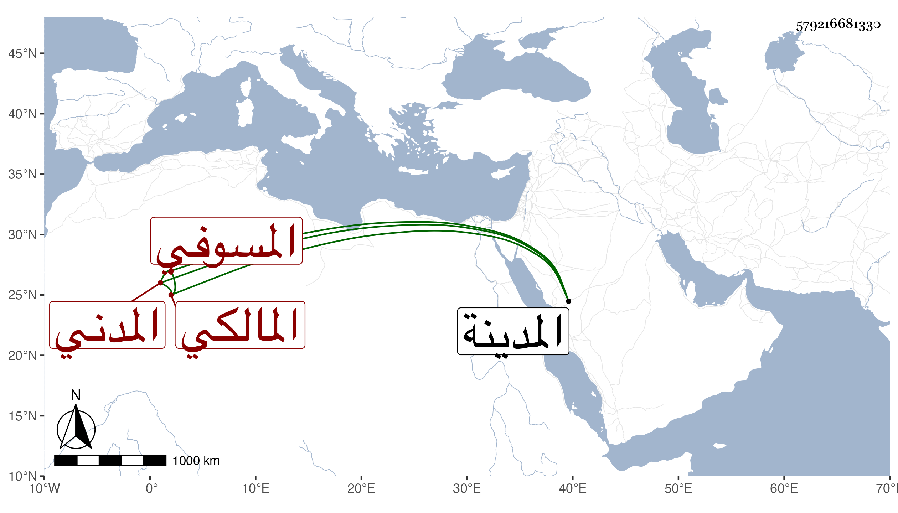

0902Sakhawi.DawLamic.ITO20230111-ara1.EIS1600.579216681330
Biography ID: 579216681330
225
محمد بن منافع المسوفي ثم المدني المالكي . قدم المدينة وهو مشار إليه بالفضيلة والصلاح فأقرأ الفقه وتزايد صلاحه وخيره وسمع على الجمال الكازروني والمحب المطري وغيرهما وممن أخذ عنه عبد الوهاب بن محمد بن يعقوب الماضي وكان يتوقف في الإقراء مدة ثم أنه جاءه يوما وسأله في القراءة فتعجب هو وغيره من ذلك بعد امتناعه فلما مات أخبرت زوجته أنه رأى النبي صلى الله عليه وسلم في منامه ومعها لإمام ملك وهو يأمره بالإقراء فتصدى حينئذ لذلك وكان هذا بعد موت صاحبه أحمد بن سعيد الجزيري وبلغني أن أمه واسمها مريم كانت تقرئ الطلبة في الفقه . مات سنة خمسين رحمه الله وإيانا .
